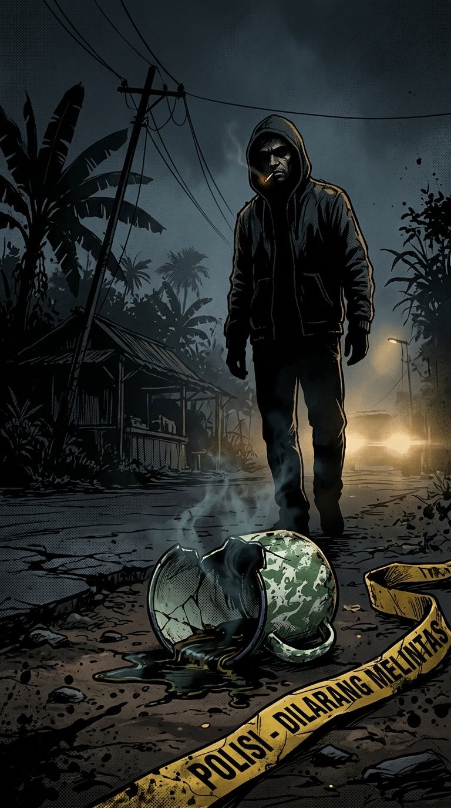
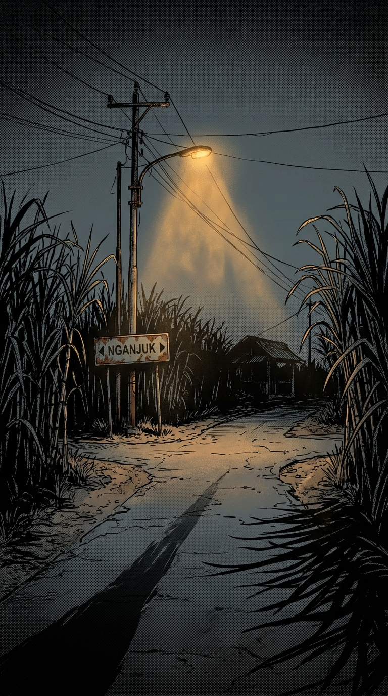
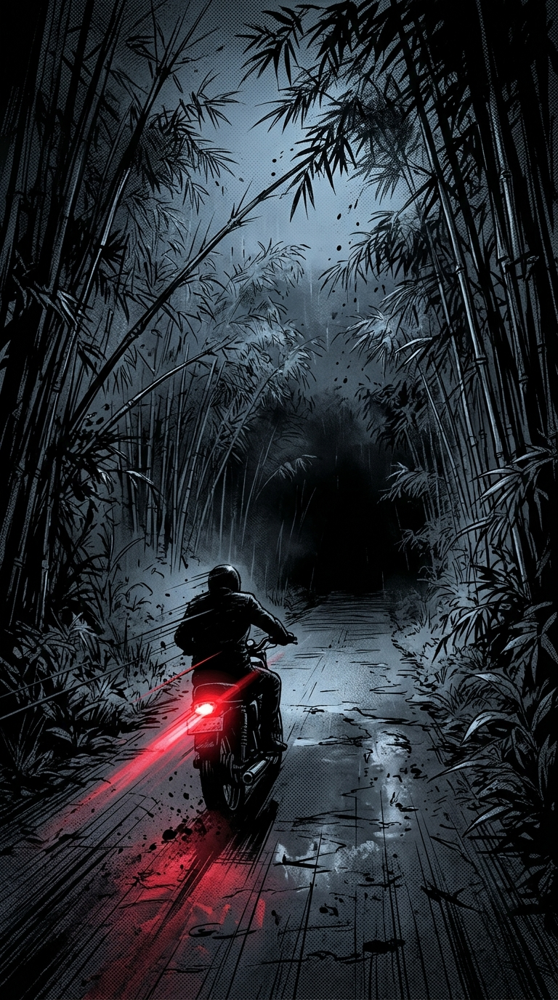
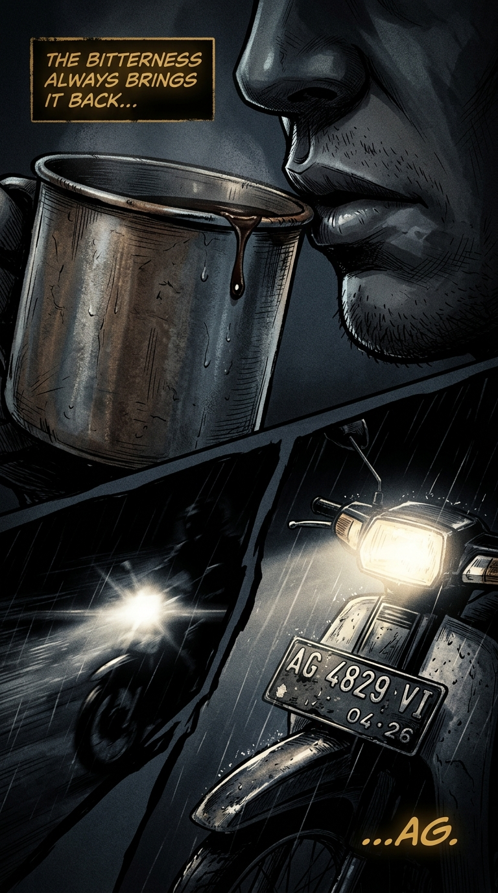
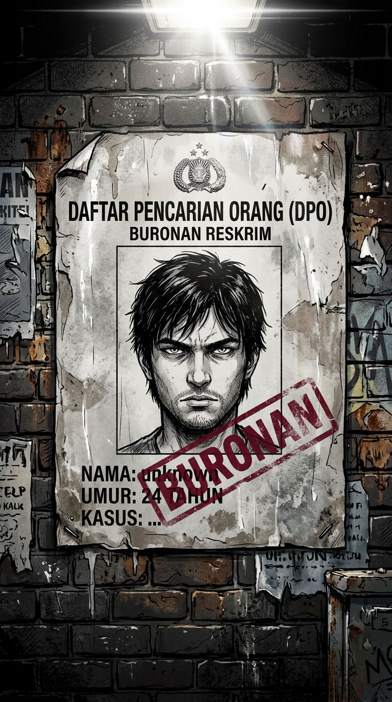
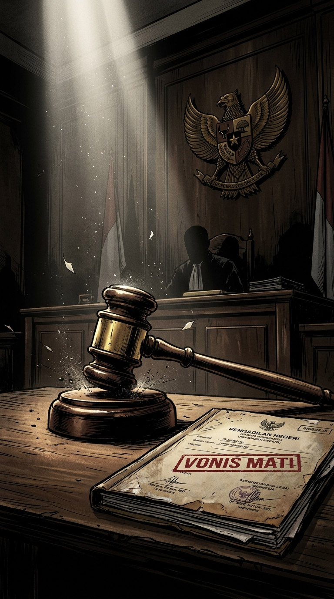

Awal tahun 2012, teror mencekam mengguncang wilayah Nganjuk, Jawa Timur. Belasan pria ditemukan terkapar tak bernyawa di semak-semak dan parit jalanan. Semua korban kehilangan ponsel dan dompet, tanpa bekas kekerasan fisik yang jelas. Polisi mengungkap pola mengerikan: para korban dihabisi dengan racun tikus mematikan. Pelaku menyelinap lewat kencan rahasia, menjamu mereka dengan secangkir teh maut. Saat korban meregang nyawa akibat racun, pelaku merampas harta lalu kabur. Penyelidikan sempat buntu karena minimnya saksi dan jejak identitas pelaku. Titik balik tiba ketika seorang korban bernama Faiz berhasil selamat dari maut. Faiz curiga dengan rasa pahit di tegukan pertama dan mengingat plat nomor motor penjemputnya. Berbekal kesaksian ini, tim reskrim menyebar sketsa wajah DPO ke seluruh penjuru. 13 Februari 2012, perburuan berakhir. Mujianto diringkus di rumah persembunyiannya. Di kantor polisi, pengakuan biadabnya terbongkar: 23 orang telah ia racun demi membalas cemburu. Lima korban tewas seketika, sementara belasan lainnya menderita trauma seumur hidup. Pengadilan Negeri Nganjuk menjatuhkan vonis mati, mengakhiri teror sang serial killer Jawa Timur.